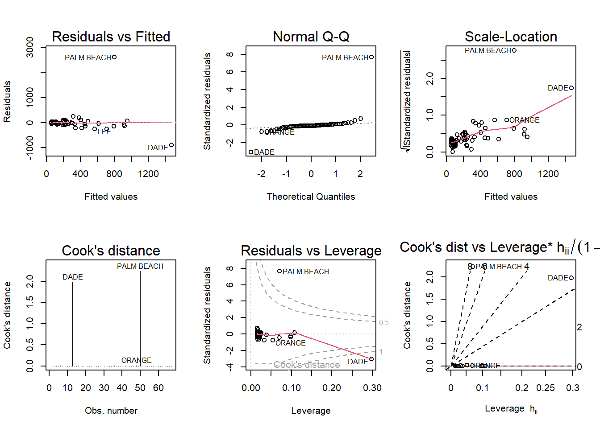

Code
library(smss)Warning: package 'smss' was built under R version 4.2.3Code
data(house.selling.price.2)
cor<-cor(house.selling.price.2)
reg_tot<-lm(P~., house.selling.price.2)library(smss)Warning: package 'smss' was built under R version 4.2.3data(house.selling.price.2)
cor<-cor(house.selling.price.2)
reg_tot<-lm(P~., house.selling.price.2)cor P S Be Ba New
P 1.0000000 0.8988136 0.5902675 0.7136960 0.3565540
S 0.8988136 1.0000000 0.6691137 0.6624828 0.1762879
Be 0.5902675 0.6691137 1.0000000 0.3337966 0.2672091
Ba 0.7136960 0.6624828 0.3337966 1.0000000 0.1820651
New 0.3565540 0.1762879 0.2672091 0.1820651 1.0000000summary(reg_tot)
Call:
lm(formula = P ~ ., data = house.selling.price.2)
Residuals:
Min 1Q Median 3Q Max
-36.212 -9.546 1.277 9.406 71.953
Coefficients:
Estimate Std. Error t value Pr(>|t|)
(Intercept) -41.795 12.104 -3.453 0.000855 ***
S 64.761 5.630 11.504 < 2e-16 ***
Be -2.766 3.960 -0.698 0.486763
Ba 19.203 5.650 3.399 0.001019 **
New 18.984 3.873 4.902 4.3e-06 ***
---
Signif. codes: 0 '***' 0.001 '**' 0.01 '*' 0.05 '.' 0.1 ' ' 1
Residual standard error: 16.36 on 88 degrees of freedom
Multiple R-squared: 0.8689, Adjusted R-squared: 0.8629
F-statistic: 145.8 on 4 and 88 DF, p-value: < 2.2e-16The backward elimation method is a method of excluding the highest p value from the model while including all variables. According to this, the “Beds(Be)” variable, which is the variable with the highest p value in the regression model above, becomes the first variable to be deleted.
The forward selection method starts with a model that does not include any variables and fits the dependent variable and the regression equation one by one for all variables, and among them, the variable with the lowest p value is included in the regression model one by one.
To this end, the p value of each variable was derived through Pearson’s correlation analysis between each independent variable in this model and the dependent variable P.
lapply(house.selling.price.2[, -1], function(x) cor.test(house.selling.price.2$P, x))$S
Pearson's product-moment correlation
data: house.selling.price.2$P and x
t = 19.561, df = 91, p-value < 2.2e-16
alternative hypothesis: true correlation is not equal to 0
95 percent confidence interval:
0.8509019 0.9318957
sample estimates:
cor
0.8988136
$Be
Pearson's product-moment correlation
data: house.selling.price.2$P and x
t = 6.9756, df = 91, p-value = 4.759e-10
alternative hypothesis: true correlation is not equal to 0
95 percent confidence interval:
0.4393929 0.7087536
sample estimates:
cor
0.5902675
$Ba
Pearson's product-moment correlation
data: house.selling.price.2$P and x
t = 9.7197, df = 91, p-value = 9.839e-16
alternative hypothesis: true correlation is not equal to 0
95 percent confidence interval:
0.5967461 0.8009566
sample estimates:
cor
0.713696
$New
Pearson's product-moment correlation
data: house.selling.price.2$P and x
t = 3.6406, df = 91, p-value = 0.0004515
alternative hypothesis: true correlation is not equal to 0
95 percent confidence interval:
0.1648168 0.5223243
sample estimates:
cor
0.356554 As a result, it may be seen that the p value of the independent variable size(S) is the smallest(2.2e-16). Therefore, the first variable to be added is the size.
It is likely that the Beds variable has high multicollinearity, contains outliers, or distortion due to small samples. Looking at one by one, according to the correlation matrix seen earlier, the Beds variable shows a correlation coefficient of .6 or more with some variables, but it is difficult to judge that it has particular multicollinearity. Next, I checked out the outliers.
summary(house.selling.price.2$Be) Min. 1st Qu. Median Mean 3rd Qu. Max.
1.000 3.000 3.000 3.183 4.000 5.000 table(house.selling.price.2$Be)
1 2 3 4 5
1 6 62 23 1 It has a range from a minimum value of 1 to a maximum value of 5, and among them, more than half are 3. Therefore, it cannot be said to be an outlier problem.
The multicollinearity of the Beds variable is not high and no special abnormal values are included. So I think that this result is due to bias due to small sample numbers.
I proceeded to select a model according to each criterion using forward selection.
First, four models including only one variable were created and each value was compared.
# 1st step: fitting 4 models with one variable
reg_S<-lm(P~S, house.selling.price.2)
reg_Be<-lm(P~Be, house.selling.price.2)
reg_Ba<-lm(P~Ba, house.selling.price.2)
reg_New<-lm(P~New, house.selling.price.2)
# model with S
summary(reg_S)
Call:
lm(formula = P ~ S, data = house.selling.price.2)
Residuals:
Min 1Q Median 3Q Max
-56.407 -10.656 2.126 11.412 85.091
Coefficients:
Estimate Std. Error t value Pr(>|t|)
(Intercept) -25.194 6.688 -3.767 0.000293 ***
S 75.607 3.865 19.561 < 2e-16 ***
---
Signif. codes: 0 '***' 0.001 '**' 0.01 '*' 0.05 '.' 0.1 ' ' 1
Residual standard error: 19.47 on 91 degrees of freedom
Multiple R-squared: 0.8079, Adjusted R-squared: 0.8058
F-statistic: 382.6 on 1 and 91 DF, p-value: < 2.2e-16price<-house.selling.price.2$P
sum((price - predict(reg_S, newdata = house.selling.price.2))^2)[1] 34508.4AIC(reg_S)[1] 820.1439BIC(reg_S)[1] 827.7417# model with Be
summary(reg_Be)
Call:
lm(formula = P ~ Be, data = house.selling.price.2)
Residuals:
Min 1Q Median 3Q Max
-72.079 -19.679 -3.779 14.352 174.752
Coefficients:
Estimate Std. Error t value Pr(>|t|)
(Intercept) -37.23 19.95 -1.866 0.0653 .
Be 42.97 6.16 6.976 4.76e-10 ***
---
Signif. codes: 0 '***' 0.001 '**' 0.01 '*' 0.05 '.' 0.1 ' ' 1
Residual standard error: 35.86 on 91 degrees of freedom
Multiple R-squared: 0.3484, Adjusted R-squared: 0.3413
F-statistic: 48.66 on 1 and 91 DF, p-value: 4.759e-10sum((price - predict(reg_Be, newdata = house.selling.price.2))^2)[1] 117028.4AIC(reg_Be)[1] 933.7168BIC(reg_Be)[1] 941.3146# model with Ba
summary(reg_Ba)
Call:
lm(formula = P ~ Ba, data = house.selling.price.2)
Residuals:
Min 1Q Median 3Q Max
-52.903 -21.003 -2.703 12.197 130.571
Coefficients:
Estimate Std. Error t value Pr(>|t|)
(Intercept) -49.248 15.644 -3.148 0.00222 **
Ba 76.026 7.822 9.720 9.84e-16 ***
---
Signif. codes: 0 '***' 0.001 '**' 0.01 '*' 0.05 '.' 0.1 ' ' 1
Residual standard error: 31.12 on 91 degrees of freedom
Multiple R-squared: 0.5094, Adjusted R-squared: 0.504
F-statistic: 94.47 on 1 and 91 DF, p-value: 9.839e-16sum((price - predict(reg_Ba, newdata = house.selling.price.2))^2)[1] 88121.47AIC(reg_Ba)[1] 907.3327BIC(reg_Ba)[1] 914.9305# model with New
summary(reg_New)
Call:
lm(formula = P ~ New, data = house.selling.price.2)
Residuals:
Min 1Q Median 3Q Max
-71.749 -21.249 -7.449 17.251 190.751
Coefficients:
Estimate Std. Error t value Pr(>|t|)
(Intercept) 89.249 5.148 17.336 < 2e-16 ***
New 34.158 9.383 3.641 0.000451 ***
---
Signif. codes: 0 '***' 0.001 '**' 0.01 '*' 0.05 '.' 0.1 ' ' 1
Residual standard error: 41.51 on 91 degrees of freedom
Multiple R-squared: 0.1271, Adjusted R-squared: 0.1175
F-statistic: 13.25 on 1 and 91 DF, p-value: 0.0004515sum((price - predict(reg_New, newdata = house.selling.price.2))^2)[1] 156772.4AIC(reg_New)[1] 960.908BIC(reg_New)[1] 968.5058Models including S show the best performance on all criteria. So in step 1, S is included in the model.
Second, a regression model including one variable was fitted again to a model containing S(Size) and compared according to each criterion.
# 2nd step: fitting 3 models with two variables
reg_S_Be<-lm(P~S+Be, house.selling.price.2)
reg_S_Ba<-lm(P~S+Ba, house.selling.price.2)
reg_S_New<-lm(P~S+New, house.selling.price.2)
# model with S and Be
summary(reg_S_Be)
Call:
lm(formula = P ~ S + Be, data = house.selling.price.2)
Residuals:
Min 1Q Median 3Q Max
-56.797 -11.751 2.859 10.817 84.417
Coefficients:
Estimate Std. Error t value Pr(>|t|)
(Intercept) -22.393 10.937 -2.048 0.0435 *
S 76.742 5.227 14.682 <2e-16 ***
Be -1.468 4.523 -0.325 0.7462
---
Signif. codes: 0 '***' 0.001 '**' 0.01 '*' 0.05 '.' 0.1 ' ' 1
Residual standard error: 19.57 on 90 degrees of freedom
Multiple R-squared: 0.8081, Adjusted R-squared: 0.8038
F-statistic: 189.5 on 2 and 90 DF, p-value: < 2.2e-16sum((price - predict(reg_S_Be, newdata = house.selling.price.2))^2)[1] 34468.04AIC(reg_S_Be)[1] 822.0351BIC(reg_S_Be)[1] 832.1655# model with S and Ba
summary(reg_S_Ba)
Call:
lm(formula = P ~ S + Ba, data = house.selling.price.2)
Residuals:
Min 1Q Median 3Q Max
-41.158 -10.984 1.658 12.792 81.058
Coefficients:
Estimate Std. Error t value Pr(>|t|)
(Intercept) -49.752 9.183 -5.418 5e-07 ***
S 63.863 4.840 13.194 < 2e-16 ***
Ba 22.448 6.130 3.662 0.000422 ***
---
Signif. codes: 0 '***' 0.001 '**' 0.01 '*' 0.05 '.' 0.1 ' ' 1
Residual standard error: 18.27 on 90 degrees of freedom
Multiple R-squared: 0.8328, Adjusted R-squared: 0.8291
F-statistic: 224.1 on 2 and 90 DF, p-value: < 2.2e-16sum((price - predict(reg_S_Ba, newdata = house.selling.price.2))^2)[1] 30032.81AIC(reg_S_Ba)[1] 809.2251BIC(reg_S_Ba)[1] 819.3555# model with S and New
summary(reg_S_New)
Call:
lm(formula = P ~ S + New, data = house.selling.price.2)
Residuals:
Min 1Q Median 3Q Max
-47.207 -9.763 -0.091 9.984 76.405
Coefficients:
Estimate Std. Error t value Pr(>|t|)
(Intercept) -26.089 5.977 -4.365 3.39e-05 ***
S 72.575 3.508 20.690 < 2e-16 ***
New 19.587 3.995 4.903 4.16e-06 ***
---
Signif. codes: 0 '***' 0.001 '**' 0.01 '*' 0.05 '.' 0.1 ' ' 1
Residual standard error: 17.4 on 90 degrees of freedom
Multiple R-squared: 0.8484, Adjusted R-squared: 0.845
F-statistic: 251.8 on 2 and 90 DF, p-value: < 2.2e-16sum((price - predict(reg_S_New, newdata = house.selling.price.2))^2)[1] 27233.66AIC(reg_S_New)[1] 800.1262BIC(reg_S_New)[1] 810.2566In addition to “S”, the model with “New” performs best on all criteria, so I included the “New” variable in the model at this stage.
Third, the model containing the remaining “Be” and “Ba” in the model containing “S” and “New” is compared by fitting.
# 3rd step: fitting 2 models with three variables
reg_S_N_Be<-lm(P~S+New+Be, house.selling.price.2)
reg_S_N_Ba<-lm(P~S+New+Ba, house.selling.price.2)
# model with S and New and Be
summary(reg_S_N_Be)
Call:
lm(formula = P ~ S + New + Be, data = house.selling.price.2)
Residuals:
Min 1Q Median 3Q Max
-47.184 -8.815 1.550 9.943 73.261
Coefficients:
Estimate Std. Error t value Pr(>|t|)
(Intercept) -15.215 9.771 -1.557 0.123
S 76.825 4.621 16.624 < 2e-16 ***
New 20.749 4.059 5.112 1.81e-06 ***
Be -5.729 4.085 -1.402 0.164
---
Signif. codes: 0 '***' 0.001 '**' 0.01 '*' 0.05 '.' 0.1 ' ' 1
Residual standard error: 17.3 on 89 degrees of freedom
Multiple R-squared: 0.8516, Adjusted R-squared: 0.8466
F-statistic: 170.3 on 3 and 89 DF, p-value: < 2.2e-16sum((price - predict(reg_S_N_Be, newdata = house.selling.price.2))^2)[1] 26644.82AIC(reg_S_N_Be)[1] 800.0934BIC(reg_S_N_Be)[1] 812.7564# model with S and New and Ba
summary(reg_S_N_Ba)
Call:
lm(formula = P ~ S + New + Ba, data = house.selling.price.2)
Residuals:
Min 1Q Median 3Q Max
-34.804 -9.496 0.917 7.931 73.338
Coefficients:
Estimate Std. Error t value Pr(>|t|)
(Intercept) -47.992 8.209 -5.847 8.15e-08 ***
S 62.263 4.335 14.363 < 2e-16 ***
New 18.371 3.761 4.885 4.54e-06 ***
Ba 20.072 5.495 3.653 0.000438 ***
---
Signif. codes: 0 '***' 0.001 '**' 0.01 '*' 0.05 '.' 0.1 ' ' 1
Residual standard error: 16.31 on 89 degrees of freedom
Multiple R-squared: 0.8681, Adjusted R-squared: 0.8637
F-statistic: 195.3 on 3 and 89 DF, p-value: < 2.2e-16sum((price - predict(reg_S_N_Ba, newdata = house.selling.price.2))^2)[1] 23683.53AIC(reg_S_N_Ba)[1] 789.1366BIC(reg_S_N_Ba)[1] 801.7996This time, the model with “Ba” is superior to the model with “Be” in all criteria. So, in this step, “Ba” is included in the model.
Finally, I compared this third model with a model including “Be”.
# 4th step: fitting 1 models with every variables
summary(reg_tot)
Call:
lm(formula = P ~ ., data = house.selling.price.2)
Residuals:
Min 1Q Median 3Q Max
-36.212 -9.546 1.277 9.406 71.953
Coefficients:
Estimate Std. Error t value Pr(>|t|)
(Intercept) -41.795 12.104 -3.453 0.000855 ***
S 64.761 5.630 11.504 < 2e-16 ***
Be -2.766 3.960 -0.698 0.486763
Ba 19.203 5.650 3.399 0.001019 **
New 18.984 3.873 4.902 4.3e-06 ***
---
Signif. codes: 0 '***' 0.001 '**' 0.01 '*' 0.05 '.' 0.1 ' ' 1
Residual standard error: 16.36 on 88 degrees of freedom
Multiple R-squared: 0.8689, Adjusted R-squared: 0.8629
F-statistic: 145.8 on 4 and 88 DF, p-value: < 2.2e-16sum((price - predict(reg_tot, newdata = house.selling.price.2))^2)[1] 23552.98AIC(reg_tot)[1] 790.6225BIC(reg_tot)[1] 805.8181All analysis is now complete. The model to be selected according to each criterion is as follows,
R-squared: Since the R-squared value of the model including all variables is the highest, by this criterion the model including all variables is selected.
Adj. R-squared: Since the adj. R-squared value of the model including three variables(excluding “Be”) is the highest, by this criterion the model including three variables(“S”,“Ba”,“New”) is selected.
PRESS: Since the PRESS value of the model including all variables is the lowest, by this criterion the model including all variables is selected.
AIC: Since the AIC value of the model including three variables(excluding “Be”) is the lowest, by this criterion the model including three variables(“S”,“Ba”,“New”) is selected.
BIC: Since the BIC value of the model including three variables(excluding “Be”) is the lowest, by this criterion the model including three variables(“S”,“Ba”,“New”) is selected.
Overall, the model including every variables is selected according to the R-squared and PRESS criteria, and the model including “S”, “New”, “Ba” variables is selected according to the adj. R-squared, AIC, and BIC.
In the same way, I proceeded with model selection using the backward method.
Four models in which variables were omitted one by one from a model including all variables were fitted and compared.
# 1st step: fitting 4 models without one variable
reg_no_S<-lm(P~.-S, house.selling.price.2)
reg_no_Be<-lm(P~.-Be, house.selling.price.2)
reg_no_Ba<-lm(P~.-Ba, house.selling.price.2)
reg_no_New<-lm(P~.-New, house.selling.price.2)
# model without S
summary(reg_no_S)
Call:
lm(formula = P ~ . - S, data = house.selling.price.2)
Residuals:
Min 1Q Median 3Q Max
-46.066 -17.066 -4.607 9.384 115.151
Coefficients:
Estimate Std. Error t value Pr(>|t|)
(Intercept) -106.101 16.892 -6.281 1.21e-08 ***
Be 26.175 4.811 5.440 4.63e-07 ***
Ba 60.184 6.900 8.722 1.41e-13 ***
New 15.099 6.070 2.487 0.0147 *
---
Signif. codes: 0 '***' 0.001 '**' 0.01 '*' 0.05 '.' 0.1 ' ' 1
Residual standard error: 25.74 on 89 degrees of freedom
Multiple R-squared: 0.6717, Adjusted R-squared: 0.6606
F-statistic: 60.69 on 3 and 89 DF, p-value: < 2.2e-16sum((price - predict(reg_no_S, newdata = house.selling.price.2))^2)[1] 58971.87AIC(reg_no_S)[1] 873.9787BIC(reg_no_S)[1] 886.6417# model without Be
summary(reg_no_Be)
Call:
lm(formula = P ~ . - Be, data = house.selling.price.2)
Residuals:
Min 1Q Median 3Q Max
-34.804 -9.496 0.917 7.931 73.338
Coefficients:
Estimate Std. Error t value Pr(>|t|)
(Intercept) -47.992 8.209 -5.847 8.15e-08 ***
S 62.263 4.335 14.363 < 2e-16 ***
Ba 20.072 5.495 3.653 0.000438 ***
New 18.371 3.761 4.885 4.54e-06 ***
---
Signif. codes: 0 '***' 0.001 '**' 0.01 '*' 0.05 '.' 0.1 ' ' 1
Residual standard error: 16.31 on 89 degrees of freedom
Multiple R-squared: 0.8681, Adjusted R-squared: 0.8637
F-statistic: 195.3 on 3 and 89 DF, p-value: < 2.2e-16sum((price - predict(reg_no_Be, newdata = house.selling.price.2))^2)[1] 23683.53AIC(reg_no_Be)[1] 789.1366BIC(reg_no_Be)[1] 801.7996# model without Ba
summary(reg_no_Ba)
Call:
lm(formula = P ~ . - Ba, data = house.selling.price.2)
Residuals:
Min 1Q Median 3Q Max
-47.184 -8.815 1.550 9.943 73.261
Coefficients:
Estimate Std. Error t value Pr(>|t|)
(Intercept) -15.215 9.771 -1.557 0.123
S 76.825 4.621 16.624 < 2e-16 ***
Be -5.729 4.085 -1.402 0.164
New 20.749 4.059 5.112 1.81e-06 ***
---
Signif. codes: 0 '***' 0.001 '**' 0.01 '*' 0.05 '.' 0.1 ' ' 1
Residual standard error: 17.3 on 89 degrees of freedom
Multiple R-squared: 0.8516, Adjusted R-squared: 0.8466
F-statistic: 170.3 on 3 and 89 DF, p-value: < 2.2e-16sum((price - predict(reg_no_Ba, newdata = house.selling.price.2))^2)[1] 26644.82AIC(reg_no_Ba)[1] 800.0934BIC(reg_no_Ba)[1] 812.7564# model without New
summary(reg_no_New)
Call:
lm(formula = P ~ . - New, data = house.selling.price.2)
Residuals:
Min 1Q Median 3Q Max
-40.199 -10.462 1.167 12.612 81.724
Coefficients:
Estimate Std. Error t value Pr(>|t|)
(Intercept) -53.382 13.319 -4.008 0.000127 ***
S 62.354 6.292 9.910 4.91e-16 ***
Be 1.636 4.327 0.378 0.706299
Ba 22.915 6.282 3.648 0.000445 ***
---
Signif. codes: 0 '***' 0.001 '**' 0.01 '*' 0.05 '.' 0.1 ' ' 1
Residual standard error: 18.36 on 89 degrees of freedom
Multiple R-squared: 0.8331, Adjusted R-squared: 0.8274
F-statistic: 148 on 3 and 89 DF, p-value: < 2.2e-16sum((price - predict(reg_no_New, newdata = house.selling.price.2))^2)[1] 29984.66AIC(reg_no_New)[1] 811.0758BIC(reg_no_New)[1] 823.7388The performance of the model without “Be” is the best in all criteria. However, according to the R-squared and PRESS criteria, the performance of the model without “Be” falls short of that of the model with all variables.
# 2nd step: fitting 3 models without two variable
reg_no_Be_S<-lm(P~.-Be-S, house.selling.price.2)
reg_no_Be_Ba<-lm(P~.-Be-Ba, house.selling.price.2)
reg_no_Be_New<-lm(P~.-Be-New, house.selling.price.2)
# model without Be and S
summary(reg_no_Be_S)
Call:
lm(formula = P ~ . - Be - S, data = house.selling.price.2)
Residuals:
Min 1Q Median 3Q Max
-45.947 -22.301 -7.501 14.153 119.618
Coefficients:
Estimate Std. Error t value Pr(>|t|)
(Intercept) -47.113 14.869 -3.169 0.00209 **
Ba 71.480 7.553 9.463 3.74e-15 ***
New 22.454 6.793 3.305 0.00136 **
---
Signif. codes: 0 '***' 0.001 '**' 0.01 '*' 0.05 '.' 0.1 ' ' 1
Residual standard error: 29.55 on 90 degrees of freedom
Multiple R-squared: 0.5625, Adjusted R-squared: 0.5528
F-statistic: 57.85 on 2 and 90 DF, p-value: < 2.2e-16sum((price - predict(reg_no_Be_S, newdata = house.selling.price.2))^2)[1] 78581.72AIC(reg_no_Be_S)[1] 898.677BIC(reg_no_Be_S)[1] 908.8074# model without Be and Ba
summary(reg_no_Be_Ba)
Call:
lm(formula = P ~ . - Be - Ba, data = house.selling.price.2)
Residuals:
Min 1Q Median 3Q Max
-47.207 -9.763 -0.091 9.984 76.405
Coefficients:
Estimate Std. Error t value Pr(>|t|)
(Intercept) -26.089 5.977 -4.365 3.39e-05 ***
S 72.575 3.508 20.690 < 2e-16 ***
New 19.587 3.995 4.903 4.16e-06 ***
---
Signif. codes: 0 '***' 0.001 '**' 0.01 '*' 0.05 '.' 0.1 ' ' 1
Residual standard error: 17.4 on 90 degrees of freedom
Multiple R-squared: 0.8484, Adjusted R-squared: 0.845
F-statistic: 251.8 on 2 and 90 DF, p-value: < 2.2e-16sum((price - predict(reg_no_Be_Ba, newdata = house.selling.price.2))^2)[1] 27233.66AIC(reg_no_Be_Ba)[1] 800.1262BIC(reg_no_Be_Ba)[1] 810.2566# model without Be and New
summary(reg_no_Be_New)
Call:
lm(formula = P ~ . - Be - New, data = house.selling.price.2)
Residuals:
Min 1Q Median 3Q Max
-41.158 -10.984 1.658 12.792 81.058
Coefficients:
Estimate Std. Error t value Pr(>|t|)
(Intercept) -49.752 9.183 -5.418 5e-07 ***
S 63.863 4.840 13.194 < 2e-16 ***
Ba 22.448 6.130 3.662 0.000422 ***
---
Signif. codes: 0 '***' 0.001 '**' 0.01 '*' 0.05 '.' 0.1 ' ' 1
Residual standard error: 18.27 on 90 degrees of freedom
Multiple R-squared: 0.8328, Adjusted R-squared: 0.8291
F-statistic: 224.1 on 2 and 90 DF, p-value: < 2.2e-16sum((price - predict(reg_no_Be_New, newdata = house.selling.price.2))^2)[1] 30032.81AIC(reg_no_Be_New)[1] 809.2251BIC(reg_no_Be_New)[1] 819.3555There is no model that improves performance compared to the existing model that includes four or three variables.So there are no more variables to exclude.
In other words, the results of model selection using the backward method are as follows.
R-squared: Since the R-squared value of the model including all variables is the highest, by this criterion the model including all variables is selected.
Adj. R-squared: Since the adj. R-squared value of the model including three variables(excluding “Be”) is the highest, by this criterion the model including three variables(“S”,“Ba”,“New”) is selected.
PRESS: Since the PRESS value of the model including all variables is the lowest, by this criterion the model including all variables is selected.
AIC: Since the AIC value of the model including three variables(excluding “Be”) is the lowest, by this criterion the model including three variables(“S”,“Ba”,“New”) is selected.
BIC: Since the BIC value of the model including three variables(excluding “Be”) is the lowest, by this criterion the model including three variables(“S”,“Ba”,“New”) is selected.
Overall, the results were the same as the forward method.
It is natural that the explanatory power of the model increases as the number of variables included in the model increases. However, as the number of variables increases, it becomes difficult to understand the model, and overfitting may occur, which increases errors when applied to new data. Therefore, when selecting a model, indicators have been released to correct the explanatory power that increases due to the increase in the number of variables, and these are adj. R-squared, AIC, and BIC. From this point of view, I prefer models that include “S”, “Ba”, and “New”, which are selected according to these criteria.
data(trees)
names(trees)[1] "Girth" "Height" "Volume"names(trees)[1] <- "Diameter"
names(trees)[1] "Diameter" "Height" "Volume" nrow(trees)[1] 31tree_reg<-lm(Volume~., trees)
summary(tree_reg)
Call:
lm(formula = Volume ~ ., data = trees)
Residuals:
Min 1Q Median 3Q Max
-6.4065 -2.6493 -0.2876 2.2003 8.4847
Coefficients:
Estimate Std. Error t value Pr(>|t|)
(Intercept) -57.9877 8.6382 -6.713 2.75e-07 ***
Diameter 4.7082 0.2643 17.816 < 2e-16 ***
Height 0.3393 0.1302 2.607 0.0145 *
---
Signif. codes: 0 '***' 0.001 '**' 0.01 '*' 0.05 '.' 0.1 ' ' 1
Residual standard error: 3.882 on 28 degrees of freedom
Multiple R-squared: 0.948, Adjusted R-squared: 0.9442
F-statistic: 255 on 2 and 28 DF, p-value: < 2.2e-16Volume = -57.9877 + 4.7082Diameter + 0.3393Height
par(mfrow=c(2:3))
plot(tree_reg, which=1:6)
“Residuals vs. Since the fitted values plot” is curved, it can be seen that the linearity assumption of this model is violated. In addition, the shape of the “Scale Location Plot” is rapidly changing, indicating that the homoskedasticity assumption is violated. Normality is satisfied according to “Normal Q-Q plot”. According to the rest of the plot, some variables have a high influence on the model but are not considered problematic (3 out of 31 observations)
Next, I checked the residual plot to check the independence of the error.
res<-trees$Volume-predict(tree_reg, newdata = trees)
plot(res)Since no unusual pattern is seen, the assumption of the independence of the error is satisfied.
library(alr4)Warning: package 'alr4' was built under R version 4.2.3Loading required package: carLoading required package: carDataLoading required package: effectsWarning: package 'effects' was built under R version 4.2.3lattice theme set by effectsTheme()
See ?effectsTheme for details.data("florida")
florida["PALM BEACH",] Gore Bush Buchanan
PALM BEACH 268945 152846 3407reg_vote<-lm(Buchanan~Bush, florida)
summary(reg_vote)
Call:
lm(formula = Buchanan ~ Bush, data = florida)
Residuals:
Min 1Q Median 3Q Max
-907.50 -46.10 -29.19 12.26 2610.19
Coefficients:
Estimate Std. Error t value Pr(>|t|)
(Intercept) 4.529e+01 5.448e+01 0.831 0.409
Bush 4.917e-03 7.644e-04 6.432 1.73e-08 ***
---
Signif. codes: 0 '***' 0.001 '**' 0.01 '*' 0.05 '.' 0.1 ' ' 1
Residual standard error: 353.9 on 65 degrees of freedom
Multiple R-squared: 0.3889, Adjusted R-squared: 0.3795
F-statistic: 41.37 on 1 and 65 DF, p-value: 1.727e-08par(mfrow=c(2:3))
plot(reg_vote, which=1:6)
According to these graphs, Palm Beach corresponds to an outlier, and in all graphs, the data of Palm Beach is not on the trend line, but is far from it.
# logarithm
florida$log_Buchanan<-log(florida$Buchanan)
florida$log_Bush<-log(florida$Bush)
# fitting
log_reg<-lm(log_Buchanan~log_Bush, florida)
summary(log_reg)
Call:
lm(formula = log_Buchanan ~ log_Bush, data = florida)
Residuals:
Min 1Q Median 3Q Max
-0.96075 -0.25949 0.01282 0.23826 1.66564
Coefficients:
Estimate Std. Error t value Pr(>|t|)
(Intercept) -2.57712 0.38919 -6.622 8.04e-09 ***
log_Bush 0.75772 0.03936 19.251 < 2e-16 ***
---
Signif. codes: 0 '***' 0.001 '**' 0.01 '*' 0.05 '.' 0.1 ' ' 1
Residual standard error: 0.4673 on 65 degrees of freedom
Multiple R-squared: 0.8508, Adjusted R-squared: 0.8485
F-statistic: 370.6 on 1 and 65 DF, p-value: < 2.2e-16# diagnosis
par(mfrow=c(2:3))
plot(log_reg, which=1:6)
Although the fluctuation of the data has been reduced through logarithm, it still has high leverage and the cook’s distance still exceeds the 4/n standard, so I think it is an outlier.